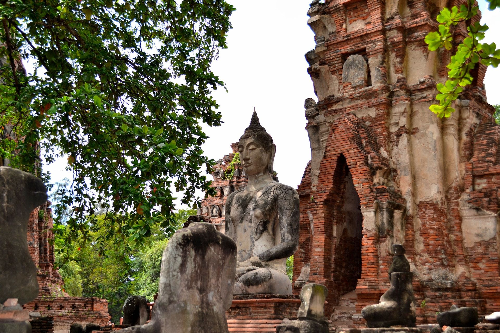

Ayutthaya
Explore Ancient Thailand



About Ayutthaya
Once the bustling capital of the Kingdom of Siam, Ayutthaya is now a UNESCO World Heritage Site celebrated for its rich history and awe-inspiring temple ruins. The city offers visitors a glimpse into Thailand's golden age with its unique blend of ancient architecture and serene landscapes. Located just 85 km north of Bangkok, it is a perfect day trip or weekend getaway for history enthusiasts and culture seekers alike.
Top Rated Activities & Events
- Take a cycling tour through the ancient ruins.
- Visit Bang Pa-In Royal Palace for its stunning architecture.
- Attend a traditional Thai puppet performance.
- Explore the historic temples, including Wat Chaiwatthanaram and Wat Mahathat.
- Enjoy a sunset boat cruise around Ayutthaya's rivers and temples.